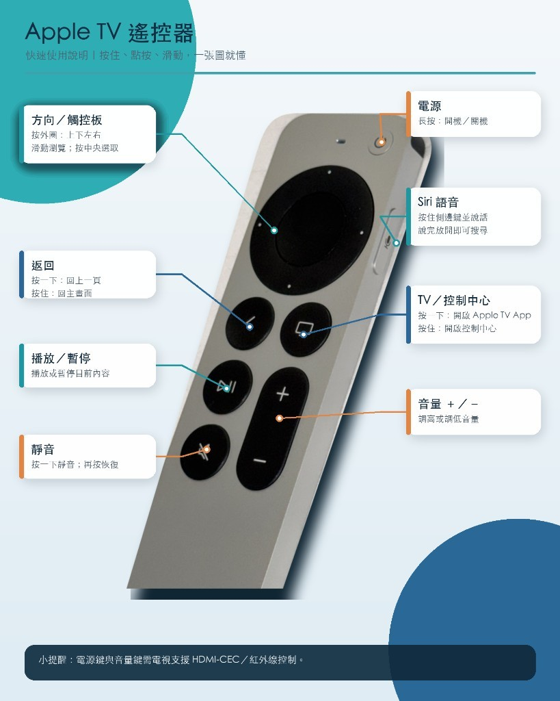
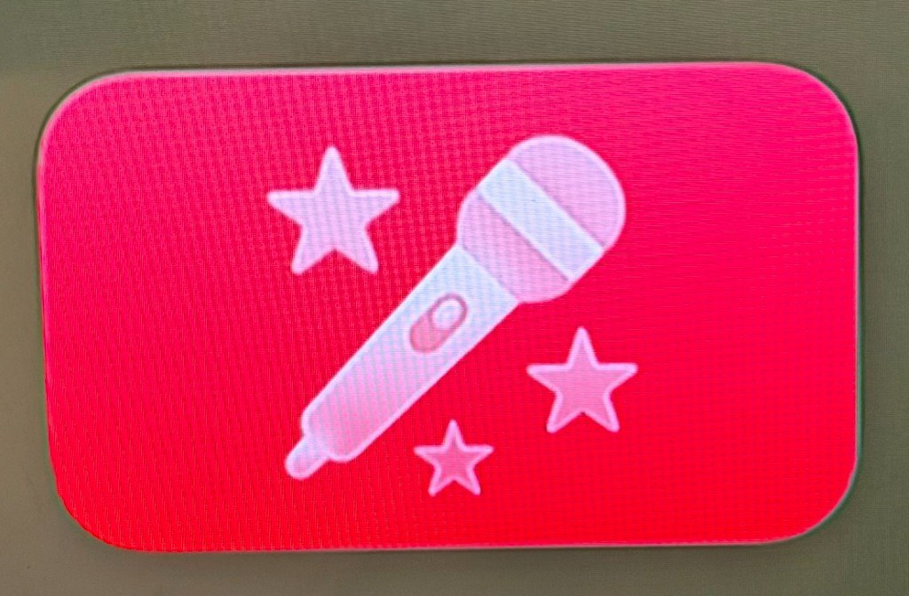
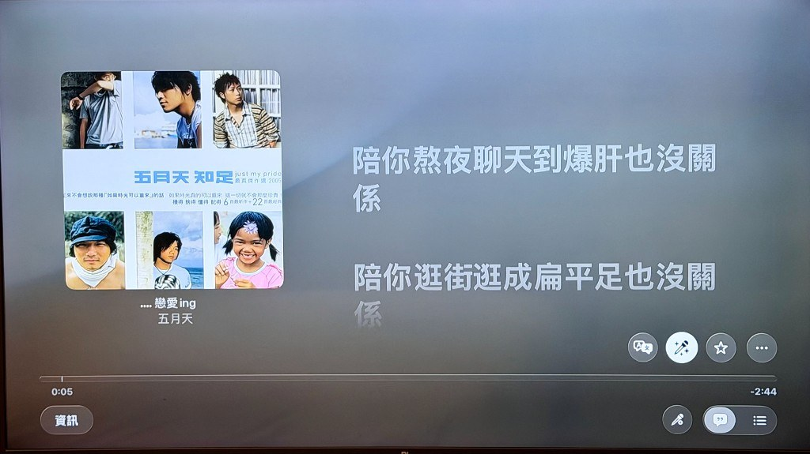
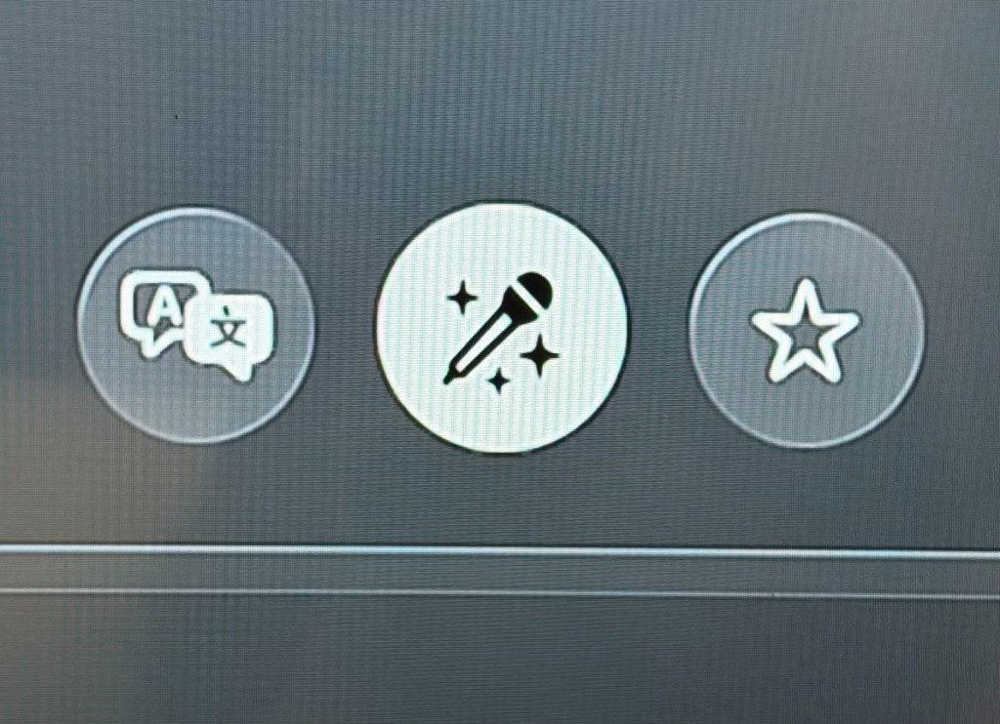
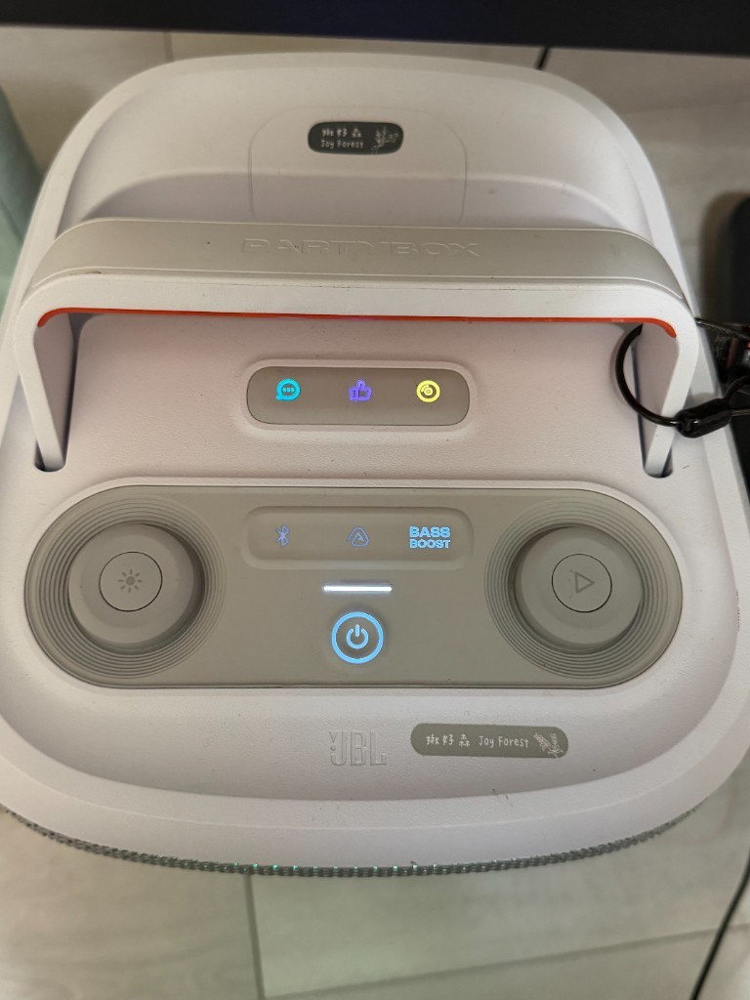
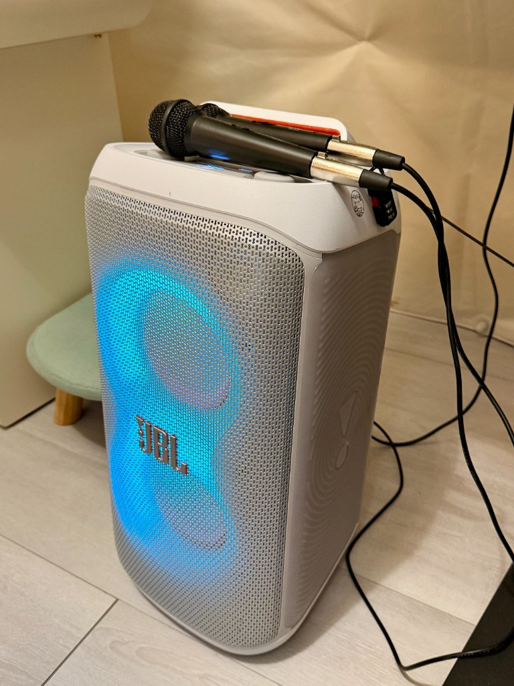
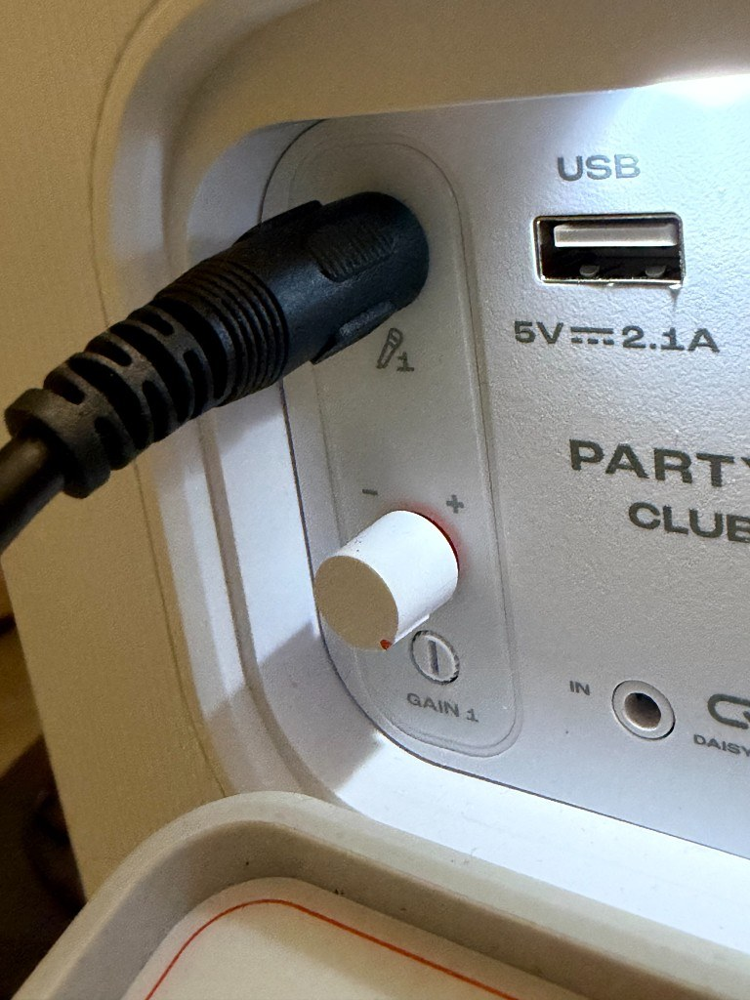

Step 1 | Open the Sing App on Apple TV
On the Apple TV home screen, check the app row at the bottom. The fourth icon is pink with a microphone—that is Apple Music Sing. Tap to open it.
Balloon Tent ／ Facilities
Sing-along on the big screen with Apple Music Sing on Apple TV, plus a JBL speaker and wireless microphones. Follow the steps below during your private stay. (Private buyout only)
This is not a professional KTV room—it is a relaxed party setup for private groups: lyrics on TV, adjustable vocal levels in the app, and a separate speaker-and-mic system you can pick up and sing with right away.
The tent uses an Apple TV Siri Remote with a protective sleeve, so button labels are less visible. If you are new to this remote, check the diagram below before choosing songs. (Diagram in Traditional Chinese.)

Note: Power and volume require TV support for HDMI-CEC or IR control.
On the Apple TV home screen, check the app row at the bottom. The fourth icon is pink with a microphone—that is Apple Music Sing. Tap to open it.

Look for a pink rounded square with a white microphone in the center. Scroll the dock left or right if needed to match this icon.

Inside the app you will find themed playlists—party hits, classic love songs, TV themes, family sing-along, duets, and more. Pick a category, then select a song.

After you choose a track, the screen shows the album cover on the left and synced lyrics on the right. The current line is highlighted so everyone can follow along.

While a song is playing, find the white circular button with a microphone icon at the bottom-right (Apple Music Sing). Tap it to open vocal adjustment.

A vertical slider appears after you tap the mic button. Slide down to lower the original vocal; at the lowest setting you get backing track only—ready for karaoke.
The TV handles lyrics and music playback. Singing uses the JBL speaker and wireless mics—a separate system.


A JBL portable speaker and wireless microphones are provided in the tent. Power on the speaker, pick up a mic, and sing—the TV plays the track while the speaker picks up your voice.
On the top panel you will see a Bluetooth button (blue icon). To play music from your phone instead, press and hold the Bluetooth button to enter pairing mode, then connect from your phone’s Bluetooth settings.

On the back of the speaker, next to the mic input, find the small dial labeled GAIN 1. Turn counter-clockwise to lower volume, clockwise to raise it.